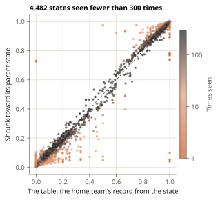

Lab note 3 of 6 · What are the odds?
Step 2: borrow strength (empirical Bayes)
A state seen four times tells us something, just not much. The fix is not to throw its record away but to mix it with something steadier: a related state with far more games behind it. This is shrinkage, and choosing how much to shrink from the data itself is called empirical Bayes.
The idea
Take the state "top of the 8th, two outs, runners on second and third, home team up 4". Its own record is thin. Its parent, the same inning, half, outs and score with any runners, has hundreds of times more games. Runners matter, so the parent is not the right answer either; but it is a good starting guess.
Mix the two:
shrunk rate = (w + k · m) / (n + k)
w home wins in n games from the state, m the parent's rate, and k a strength: the parent counts like k extra games. A state with n much bigger than k keeps its own record; a state with n much smaller than k takes its parent's.
Choosing k from the data
If k is too small, rare states stay noisy; too big, and real differences between states get washed out. Empirical Bayes picks k by asking which value makes the records we actually saw most likely.
Suppose each state's true rate is drawn from a Beta distribution centred on its parent's rate, with strength k, and its record is a binomial draw from that true rate. Then each state's record has a known probability for every k (the beta-binomial distribution). Multiply over all states, and pick the k with the highest product. No test data is used: the spread of the states' records around their parents is what tells us how much they really differ.
A ladder of parents
The lab shrinks in four levels, each toward the one above it:
| Level | Groups states by | Fitted k |
|---|---|---|
| 1 | half, score | 0.7 |
| 2 | inning, half, score | 35.9 |
| 3 | inning, half, outs, score | 465.7 |
| 4 | the full state (with runners) | 59.8 |
The numbers are telling. At level 3 k is large: once you know the inning, half and score, knowing the outs moves the odds only a little, so a level-3 group needs hundreds of games before its own record wins out. At level 4 it is about 60: runners matter more, and a full state's own record takes over after a few dozen games.

Each dot is a state seen fewer than 300 times in training. On the dashed line, shrinking changed nothing. The orange dots (seen once or a few times) are pulled hard toward their parent's rate: a record of 0% or 100% from a game or two ends up wherever the parent state says. The dark dots (seen a hundred times or more) barely move.
Result
| Model | Log loss, all | Rare states |
|---|---|---|
| Lookup table | 0.4671 | 0.1526 |
| Shrunk table | 0.4670 | 0.1393 |
Overall the gain is a hair, but it is real: resampling the test games, the shrunk table's log loss minus the table's lies between -0.00019 and -0.00010 (95%), below zero every time. On rare states the gain is 9%. Shrinking costs nothing where data is plentiful and helps where it is thin, which is why the same idea comes back for the eras (lab note 6).
Next: Step 3: a formula.